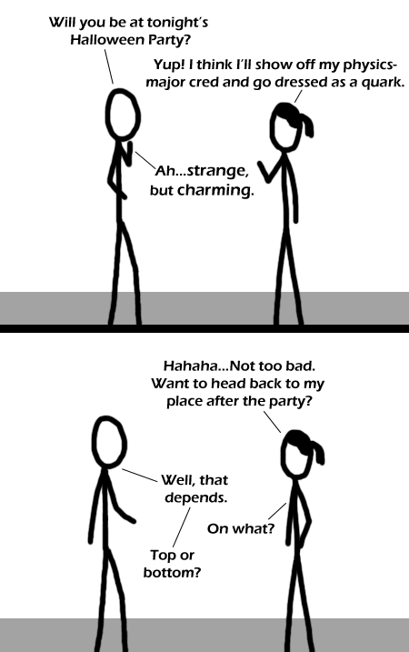

Comic JK 280
When I Feel Like It
⇤
<
?
>
⇥

⇤
<
?
>
⇥
Forum
.
RSS
.
Digg
.
Facebook
.
Reddit
.
Twitter
.
Stumbleupon
Enter your thoughts on number 280 here. Please, no spamming, trolling, or phreaking. Well played Why, oh why can't I find these ones? Oh God I cant stop laughing That Was Amazing I'm getting bored of the science puns. >go away then .... Please more science puns.... more.. More... Moar ! >>How about mixing in more computer science puns and less physics ones? Someone explain? This comic is over my head,I admit, but I like the ones I get. >>It's a physics joke based on the different flavours of quarks: strange, up, down, top, bottom, and charm. >>>Number 474. >>> Ok, got it. So he is just naming types of quarks, but the characteristics of the top or bottom quarks aren't relevant to the joke. I thought there would be some negative association with different types of quarks. >>>> Well, that depends. >>>>>I'm more into the strange quarks myself... >>>>>>She's a very kinky sub-particle, the kind you don't take home to mo-thah... >>>>>>>She could be a half-spin half-witted person. OOhh... this comic's giving me a hadron... >Nooo.... Bad pun.... >>EPIC pun you mean >>>I used to think it was the hardon collider >>>>The hardon collider is the name of the sex move me and your mom invented last night. I'm wondering how she would be able to dress up as a subatomic particle.... >She probably takes a minimalist approach to it . . . Brilliantly amusing o/ (<- imagine that thing has a second arm, it´s just that backward-slashes don´t get accepted) --> Do double backslash to escape it > Uh, could´ve thought of that myself ... Thanks ;) >> Probably won't survive the next edit though... let s see if i understand... there 6 types of quark: strange, up, down, top, bottom, and pikachu =Pare >Huh? What was that last one? Isn't it charm? ...actually, I feel I might be missing something... What's a pikachu? >>get OUT./ how do you not know what a PIKACHU is? Google it. >>"Google it" - the modern way of saying: "I don't know what it is either, but I'm not going to admit it..." >>>Everyone knows what a Pikachu is. That person's just retarded. Be nice. >>>>Google it is the modern way of saying "I can't believe you're so ignorant you don't know this already and I don't have the time or energy to explain everything to you." ^What everyone else said Oh ho ho Quark puns this is understood by what percentage of readers? I liked it though